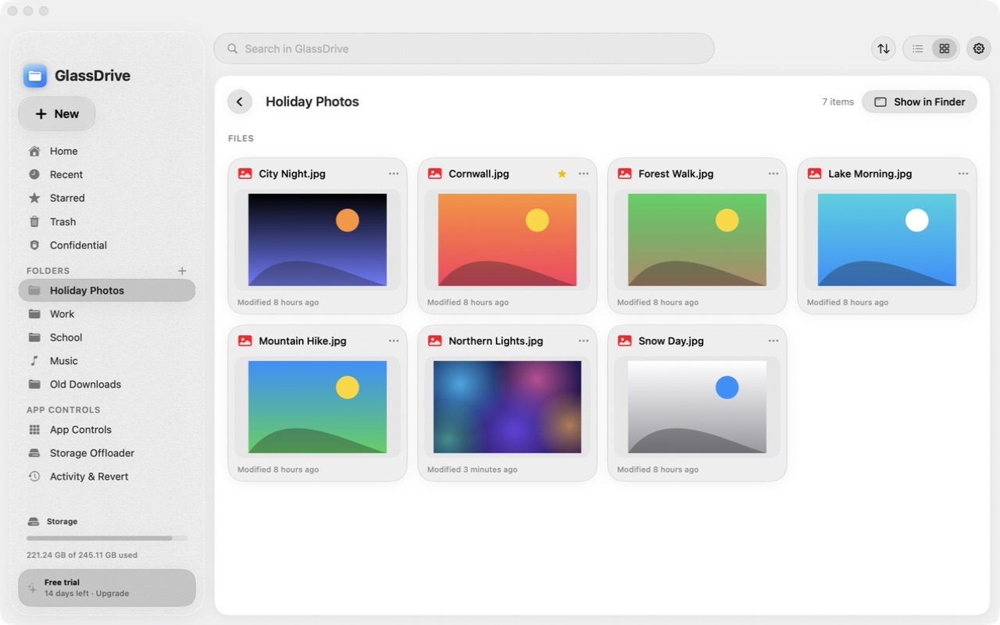
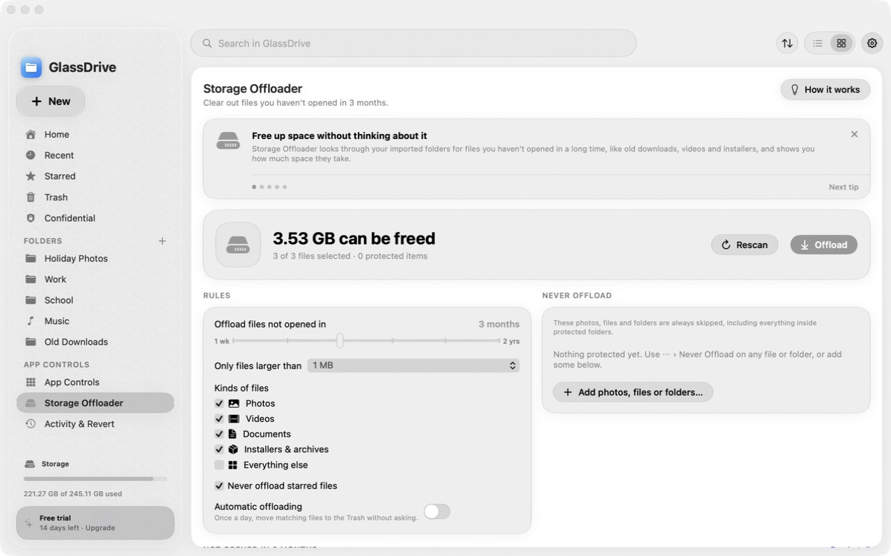
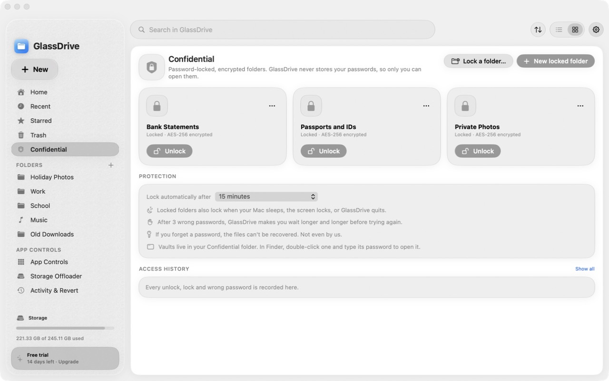
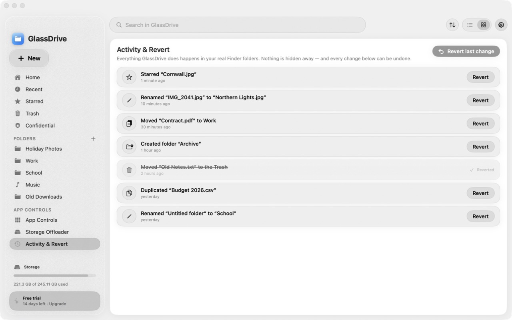
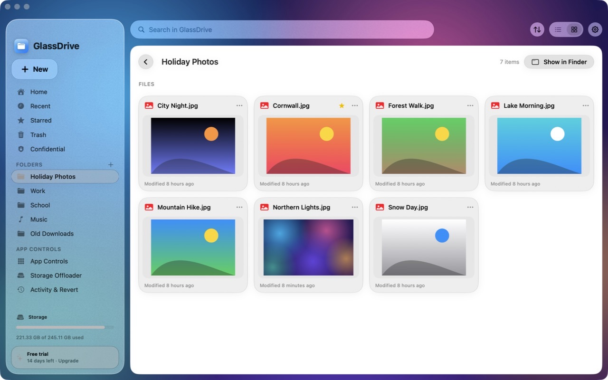

Browse like Google Drive. Big previews, folders up top, and a search bar that actually finds things.
GlassDrive Beta
Every file on your Mac. Finally beautiful.
Free during the beta. Every feature, no card. Help us test it and shape what it becomes.
Public beta for macOS 14 Sonoma or later. Expect the odd bug, and tell us about it in the app.

Get the highlights.
Clear space without thinking. Storage Offloader finds what you haven't opened in months.

Lock what's private. Confidential folders are encrypted with AES-256 and open only with your password.

Undo anything. Every change is listed in Activity & Revert. One click puts it back.

Glass, your way. From completely clear to beautifully frosted, with one slider.
Works with Finder
Not instead of it.
Alongside it.
GlassDrive works on your real files. Rename, move or delete here and Finder shows it instantly, and the other way round. No special formats. No lock-in. Stop using it any time and everything is exactly where you left it.
Why can't I just use Apple's?
You can. Here's our cheeky theory.
Finder and iCloud come free with your Mac. But we've noticed something: the harder it is to see what's filling up your Mac, the faster it fills up, and the more likely you are to buy more iCloud storage or another drive. That's more money for Apple. We can't prove that's the plan. We just think it's funny how it works out.
GlassDrive puts your comfort first, not upsells. It shows you what's taking up space and helps you clear it. The money we make goes back into making the service better and building the features that come next.
Everything Finder should have been
Simple on the surface.
Powerful underneath.
Confidential
Password-locked folders, encrypted with AES-256. They lock themselves when your Mac sleeps, and every wrong password is logged.
Storage Offloader
Choose how long a file can go unopened. GlassDrive shows what can go and never touches anything you protect.
App Controls
See every app and its size. Install from a .dmg in one click, and uninstall cleanly, leftovers included.
Activity & Revert
Deleted files go to the Trash, never straight to deletion. Every change can be undone.
Make it yours
From clear to frosted.
At Clear, the glass disappears and only your folders and text show. Slide right and it frosts like real glass.
Your files
GlassDrive Ultimate
Your photo.
Behind the glass.
Put any picture behind GlassDrive and scale it up or down until it's just right. A little more customisation, and an extra high five from us.

Private by design
Your files never leave your Mac.
0trackers, ads or analytics
AES-256encryption for Confidential folders
1switch in System Settings. No pop-up after pop-up.
Pricing
Loyalty pays.
£3.99 your first month. Then £3, dropping 10p every two months you stay, down to £1.99. Or pay yearly and save 20%.
Why GlassDrive.
Free in beta
Every feature, Ultimate included. No card.
Lifetime plan policy
From the day you subscribe, your price can never go up.
Gets cheaper
Your price drops the longer you stay.
We don't sell data
We earn from your subscription, never from your data.
Refer a friend
Get a free month for every friend who subscribes. It stacks.
14-day refunds
Not for you? Email us for your money back.
Beta testers wanted
Break it. Tell us.
Get a year free.
Use GlassDrive for real, try to break it, and tell us what's broken or what would make it better. Every tester who sends us useful feedback during the beta gets 12 months of Ultimate free (our top plan) when paid plans start.
Send it with “Send feedback” in the app's sidebar, or email henrysarosi9@gmail.com from the email address you signed in with.
“Useful” means a bug with the steps to make it happen, or a specific idea for improving GlassDrive. One reward per person. Tester reward terms.